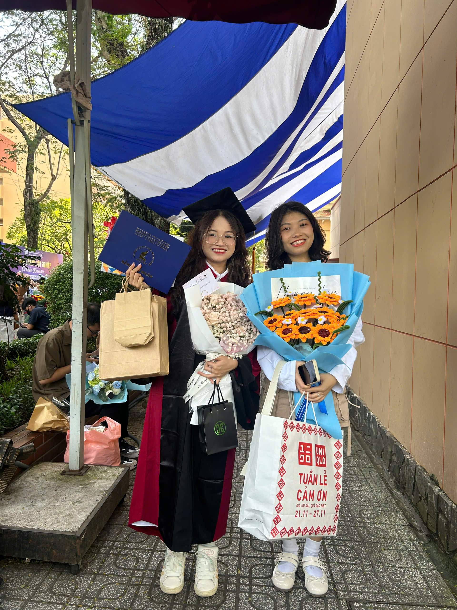
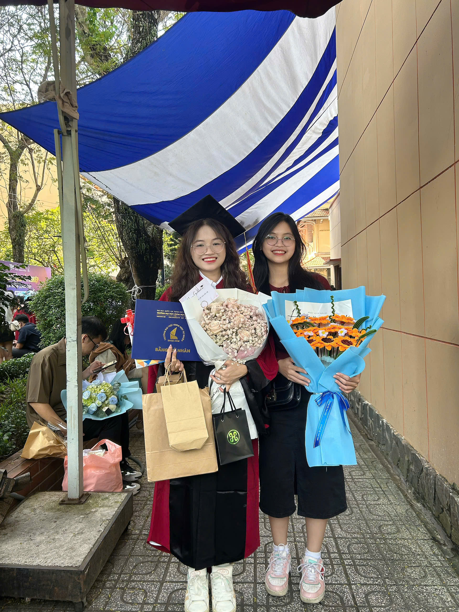

Mỗi người là một mảnh ghép trong cuộc đời VK. Cảm ơn vì tất cả!
Gửi: ThuyHien
TH có lẽ là bông hoa hướng dương nỗ lực nhất mà mình biết. Tụi mình may mắn gặp được nhau, rồi cứ thế đi cùng nhau trong hành hình đi tìm bản thân mình. Hai người – hai ngã rẽ, hai chí hướng cứ thế bên nhau gần 4 năm đại học, mình không hiểu hết những lời TH nói, nhưng mình nghe cổ càm ràm kể lể không sót một câu nào. Mình thích nghe TH nói lắm, mình thích mindset của cổ và cách cổ đối nhân xử thế. Và mình thích cách cô ấy luôn tình tĩnh, nhẹ nhàng xử lí mọi việc. Có lẽ, từ căn phòng đến trái tim mình, đều là nhờ cổ dọn dẹp và sắp xếp ngay ngắn. Cổ vừa là một người truyền cảm hứng, vừa là người thầy của mình trong hành trình làm khóa luận. Và những lúc đi học bài với cổ, mình mới có cảm giác hòa mình vào deadline, cả thế giới thu nhỏ lại đúng còn hai người – hai ước mơ.
— Vũ Kiều
Gửi: NgocTran

Biết nhau cũng gần 10 năm, có lẽ mọi tình bạn của mình đều bắt nguồn từ hai từ “ thiện cảm”. Mình không hiểu những gì cô ấy nghĩ, cả những gì cô ấy nói. Nghe nó thật ấu trĩ và ngu ngốc. Đôi lúc, mình nghĩ sao cổ có thể tồn tại được đến bây giờ mà vẫn còn lành lặn. Phải chăng kiếp trước cổ đã cứu cả dãi ngân hà để bây giờ có được sự bao dung của thượng đế? Nhưng để được chọn một người đi hát K, mình chọn cổ. Có lẽ sự “không hay” trong giọng hát của cổ là thứ khiến mình tự tin hơn vào giọng hát của bản thân. Và bây giờ, khi sắp không còn ở chung với cổ, mình mới dám mạnh mẽ để nói lên tiếng lòng của mình, những tiếng uất ức và uất hận từ sâu bên trong. Lúc trước mình nghĩ, không biết đến bao giờ mình mới được nghe những lời tử tế và triết lí từ cổ. Nhưng bây giờ, mình nghĩ chính sự thẳng thắng, dám nghĩ, dám làm của cổ mới chính là điều giúp cổ có được nhiều thứ như ngày hôm nay và đặc biệt là có được mình. Mình may mắn vì sinh nhật, lễ tết nào cũng có cổ ở bên, mình biết ơn cổ nhiều lắm. Chơi với cổ thích lắm, mình không cần phải dùng não. Một người điềm tĩnh như mình lại có nhiều lúc không kiểm soát được bản thân như vậy. Có lẽ, cổ là người đã giúp mình khai phá con thú trong người mình. Và cũng cảm ơn cuộc nói chuyện giữa mình với bame cổ, để mình biết được rằng, cổ đã “nhường nhịn” và “vị tha” cho mình nhiều đến như nào.
— Vũ Kiều
Gửi: NgocHan
Mình tự đánh giá rằng cổ là người có tính cách giống mình nhất, là bộ ba tam đa Phúc – Lộc – Họa nhất mà mình tâm đắc (Họa là NgocTran). Một người có thể suy nghĩ chín chắn, chu đáo cho mọi việc nhưng có thể là không nhớ ngày sinh nhật của bất kì ai. Mình thấy mình giống cổ lắm, mình thích ém mọi việc trong lòng và không nói với ai, mình chờ mọi việc xong xuôi chỉ để thông báo với mọi người rằng : Mình đã ổn! Nhưng mình không đa tài giống cổ, mình không biết hát, biết vẽ, biết đàn cũng không gọn gàng và cầu toàn như cổ. Mình thích qua nhà cổ chơi lắm, cảm giác như chơi ở nhà z đó, thích cảm giác bị cổ mắng và càm ràm mình như mẹ mình. Nếu như NgocTran là người bao dung mình nhất, thì có lẽ NgocHan là người may mắn nhất nhận được sự bao dung của mình. Mình sẽ vui nếu như mình gặp và ở chung với cổ, còn lại thì KHÔNG. Nếu mọi người nghĩ rằng mình là người khó chịu nhất, thì hãy để mình cho mọi người gặp cổ, cổ khó gấp 100 lần mình. Nhưng mình đúng giờ và không trễ hẹn như cổ, cổ khó trong mọi việc, trừ việc đi đúng giờ. Vietjet phải gọi cổ bằng cụ.
— Vũ Kiều
Gửi: KimNgu

Có lẽ người hưởng ứng mọi cuộc vui của mình nhất là cổ. Cổ có thể cân tất mọi thể loại để chơi với mình. Mình nhớ những ngày cấp 3, mình gặp nhau còn nhiều hơn gặp bame mình. Nếu không nằm ngủ ở nhà, tức là đang đi chung với KN. Tụi mình hòa thuận lắm, mình nói cổ sao cũng được, chưa bao giờ cãi nhau quá 3 câu (vì đến câu thứ 4 là mình nghỉ chơi), mình làm gì cổ cũng không giận. Nhưng hôm đó cổ làm mình giận, thế là mình nghỉ chơi với cổ hai năm. May mắn là mình kịp hồi sinh và viết tiếp câu chuyện này. Nếu NgocHan cầm kỳ thi họa, thì KN là idol vbiz trong lòng mình, một trap girl -tiktoker chính hiệu. Nếu phải quay tiktok và phải chọn một người để quay tiktok, mình chọn cổ. Chỉ có cổ mới đủ kiên nhẫn training cho mình, đủ kiên nhẫn để quay 1 clip 80 lần chỉ để chọn ra 1 clip mình đúng nhạc. Cổ cũng là thợ make up kiêm nhiếp ảnh gia tuyệt vời nhất trong lòng mình.
— Vũ Kiều
Gửi: TranKhoi & DoanThinh

Một người là bạn thân cấp 3, và một người là bạn thân đại học của mình. Điểm chung của hai bạn là hay ảo tưởng và phóng đại năng lực của mình, cũng rất nhiệt tình nhờ và giúp đỡ mình trong mọi chuyện, nói chung là có qua có lại. Mình đánh giá TK “lành” hơn DT vì TK không rủ VK đi nh** như DT, và TK cũng không nói chuyện xéo xắt với mình như DT. Hơn hết, mình hi vọng rằng, những cô gái tiếp theo xuất hiện trong cuộc đời hai bạn sẽ buông tha và nhẹ nhàng với mình. Nguyên là nhân chứng sống trong các cuộc tình của bạn, mình thấy được sự nghiêm túc, thật lòng và chung thủy trong mọi mối quan hệ của hai bạn. Mình xin dơ cờ trắng từ giờ đến cuối đời! Nghiêm túc thì mình rất biết ơn vì TK đã đến dự TN mình tận 2 lần. Và cảm ơn DT đã “từ chối lời mời” nhưng vẫn ngàn dặm xa xôi gửi bó hoa tươi thắm đến cho mình. Mình may mắn có hai bạn đồng hành cùng mình trong thời gian qua và mình cũng không biết nói gì thêm ngoài câu : 1 2 3 dô! Cảm ơn!
— Vũ Kiều
Gửi: [Tên Bạn 4]

[Lời nhắn của bạn gửi đến Bạn 4. Ví dụ: Cảm ơn cậu đã luôn lắng nghe. Tình bạn của chúng ta là mãi mãi.]
— Vũ Kiều
Gửi: [Tên Bạn 6]
[Lời nhắn của bạn gửi đến Bạn 4. Ví dụ: Cảm ơn cậu đã luôn lắng nghe. Tình bạn của chúng ta là mãi mãi.]
— Vũ Kiều
Gửi: [Tên Bạn 7]
[Lời nhắn của bạn gửi đến Bạn 4. Ví dụ: Cảm ơn cậu đã luôn lắng nghe. Tình bạn của chúng ta là mãi mãi.]
— Vũ Kiều
Gửi: [Tên Bạn 5]

[Lời nhắn của bạn gửi đến Bạn 5. Ví dụ: Hẹn một ngày không xa chúng ta sẽ lại gặp nhau. Chúc cậu thành công rực rỡ!]
— Vũ Kiều
Hãy để lại cho tôi một bình luận nếu bạn đã xem và cảm động về nó nhé! ❤️